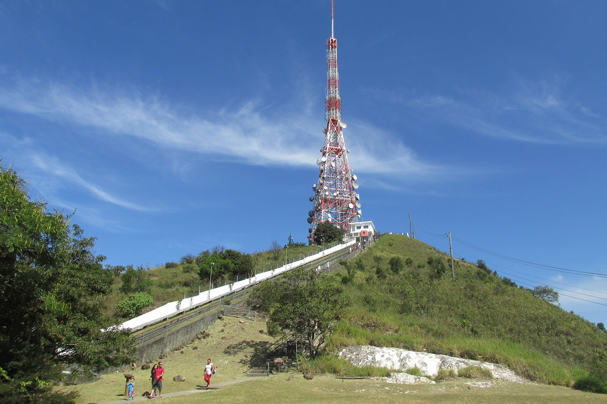
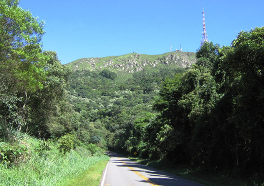

Por quê o bairro é conhecido?
O bairro é muito famoso por ser onde situa-se o Pico do Jaraguá, o ponto mais alto do município de São Paulo e por onde passam também duas importantes saídas para o interior paulista: as rodovias Bandeirantes e Anhanguera.
Pico do Jaraguá

Chegando a uma altitude de 1.135 metros. Localizado no bairro do Jaraguá, a oeste da serra da Cantareira, além de ter como vizinhos os bairros de Perus e Pirituba e o município de Osasco. Nos seus arredores, foi criado o Parque Estadual do Jaraguá, para conservação da área.
Pode-se chegar ao seu cume por uma via asfaltada (Estrada Turística do Jaraguá) e através da Trilha do Pai Zé (1.450 metros de extensão). No topo, há duas grandes antenas, sendo uma de televisão, compartilhada por 3 emissoras: TV Globo São Paulo, TV Bandeirantes São Paulo e TV Cultura, além de pequenas instalações comerciais e locais destinados a estacionamento de veículos.
Ao se atingir o topo, tem-se uma visão principalmente da parte oeste da Grande São Paulo. Também pode ser avistado o Rodoanel Mário Covas, na parte posterior. Junto à antena de televisão, existe uma grande escadaria que permite subir ainda mais, ladeada por um bondinho que se destina ao transporte de pessoas e materiais para manutenção da antena.
Parque Estadual do Jaraguá
|
O Parque Estadual Jaraguá possui 492 hectares e abriga um dos últimos remanescentes de Mata Atlântica da Região Metropolitana de São Paulo. Antiga fazenda do ciclo do ouro, sua área foi adquirida pelo governo estadual em 1940 e transformada em parque estadual em 1961, com o objetivo de proteger os recursos naturais da região, incentivar a pesquisa e promover a educação ambiental.
Em 1994, foi considerado pela UNESCO um Patrimônio da Humanidade, integrante da Reserva da Biosfera do Cinturão Verde de São Paulo. A palavra Jaraguá vem do tupi e significa “Senhor dos Vales”. Característica marcante do Parque, com montanhas que chegam a 1.135 metros de altitude e podem ser visualizadas de várias partes da cidade. Isso caracteriza o Parque como um atrativo natural único da cidade de São Paulo. Nas trilhas do Parque, é possível observar espécimes nativos de flora e fauna, como macaco-prego, tucano-do-bico-verde, bicho-preguiça, palmito-juçara, guapuruvus, ipê-amarelo, pau-d’alho, dentre outros. |
 |